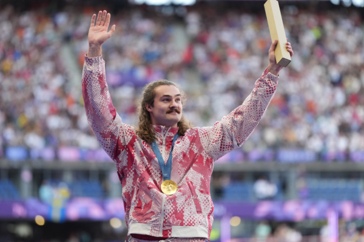

8月4日，加拿大卑诗省链球（hammer throw）运动员伊桑·卡茨伯格（Ethan Katzberg）以84.12米的成绩夺得金牌。（加通社） 【2024年08月06日讯】（记者季薇多伦多报导）在2024年巴黎奥运会进行到第9天的时候，加拿大卑诗省链球（hammer throw）运动员伊桑·卡茨伯格（Ethan Katzberg）以84.12米的成绩夺得金牌。加拿大奥委会称，这是112年以来，加拿大再次在奥运会上获得此项目的奖牌。在1912年斯德哥尔摩奥运会上，加拿大链球运动员邓肯·吉利斯（Duncan Gillis）获得一枚银牌。
在2024年巴黎奥运会8月4日的链球投掷比赛中，匈牙利选手本斯·哈拉斯（Bence Halasz）摘得银牌，成绩79.97米；铜牌由乌克兰选手米哈洛·科汗（Mykhalo Kokhan）夺得，成绩79.39米。
年仅22岁的卡茨伯格，在过去几年中的比赛中大放异彩。在2022年的英联邦运动会上，他摘得该项目的银牌；在2023年的世界田径锦标赛和泛美运动会上，他连连摘金。21岁时，他成为有史以来最年轻的男子链球世界冠军美誉。
卡茨伯格表示，巴黎摘金要归功于他的教练——2008年奥运会男子铅球（Shot Put）铜牌得主迪伦·阿姆斯特朗 (Dylan Armstrong)。
目前的链球世界纪录由前苏联运动员尤里·谢德赫（Yuriy Sedykh）保持，他在1986年投出了86.74米。
责任编辑：岳怡